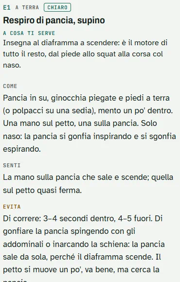

Prima le Radici
Prima le RadiciIl piano · in videochiamata
Il piano su misura
Adattiamo le 12 settimane del Quaderno al tuo obiettivo, al tuo tempo e a quello che oggi riesci a fare. Su questo sito non si compra niente: si parte da una videochiamata privata.
Scegli la durata
Tre durate: 1 anno, 6 mesi, 3 mesi. I prezzi escono presto.
Se la mail non si apre, l'indirizzo è in fondo alla pagina, da copiare.
One to one · Correzioni dal vivo, online o in presenza. Pochi posti: si entra dopo una chiamata di 15 minuti.
Cosa succede dopo
- Tocchi «Richiedi un appuntamento» sul pacchetto che ti interessa: si apre una mail già scritta.
- Ti rispondo col questionario, in un modulo, mai in DM, e fissiamo la videochiamata.
- In videochiamata guardiamo insieme obiettivo, tempo e test, e scegliamo percorso, livello e accento.
- Se decidi di partire, paghi e ricevi il tuo codice: apre il tuo Quaderno su questo telefono.
Il Quaderno del Respiro
Il quanto, il quando, il per te
Gratis provi il cosa: gli esercizi, le routine, i test. Con il codice si apre il Quaderno: quanto fare e quando salire. In videochiamata lo adattiamo a te, e dietro c'è una persona.

Il quando. 
Il quanto. 
Tutte le schede.
Dietro c'è una persona. Il codice arriva dopo una videochiamata privata, in cui scegliamo insieme percorso, livello, tempo e accento. Poi un controllo video a ogni fine blocco e una chat con risposta entro 48 ore nei giorni feriali.
I percorsi
Quattro percorsi, la stessa base
Cambia l'accento, non le radici.
Benessere
Lavori seduto e non fai sportIl tuo percorsoCorsa e fiato
Corri o fai sport di resistenzaIl tuo percorsoCombattimento
Arti marziali, colpi, lottaIl tuo percorsoForza e scatti
Palestra, calisthenics, sport di squadraIl tuo percorso
Come si sceglie, in chiaro
- L'obiettivo sceglie il percorso. Quello che fai, o vuoi fare, decide dove va l'accento.
- I test regolano dose e accento. Non scelgono il programma e non dicono qual è il tuo problema: dicono da dove parti.
- In videochiamata si decide il resto: livello, tempo a settimana, esercizi da togliere se oggi non riesci a farli.
Ogni percorso ha una sessione tipo da 15 minuti, gratis.
Domande frequenti
Le risposte brevi
Che cosa è gratis e che cosa no?
Gratis: le pillole, le routine da 5 minuti, i test, una sessione tipo per ogni percorso e la sfida di 7 giorni. Con il codice si apre il Quaderno: il programma di 12 settimane, quanto fare e quando salire, adattato a te in videochiamata, con una persona che ti segue.
Quanto tempo serve?
Una routine dura 5 minuti, una sessione tipo 15. La sfida chiede 3 minuti al giorno per 7 giorni. Nel Quaderno il tempo a settimana lo scegliamo insieme in videochiamata: Breve, Base o Pieno, circa 50, 90 o 125 minuti.
Funziona senza internet? Si installa sul telefono?
Sì. Il Quaderno si apre dal link, si aggiunge alla schermata Home come un'app e, dopo la prima apertura col codice, funziona anche senza internet. Test e diario restano sul telefono.
È per me?
È per chi si allena, in qualsiasi sport, e per chi vuole solo muoversi meglio ogni giorno. Non sostituisce un medico né un fisioterapista: con un dolore acuto o un infortunio in corso, prima il medico.
Quanto costa?
Le pillole, i test e le sfide sono gratis. I prezzi del piano escono presto.
Come funziona il codice?
Il codice è personale: te lo do in videochiamata. Lo scrivi in «Ho il codice», in alto, e si apre il tuo Quaderno su questo telefono. Se spunti «Ricordalo», la volta dopo si apre da solo.
Dove finiscono i miei dati?
Le risposte alle tre domande, le routine, i test e la sfida restano su questo telefono, in questo browser: non li riceve nessuno. Se chiedi un appuntamento, il questionario arriva dopo, in un modulo, con il tuo consenso, mai in DM.
Prima di iniziare
Questi esercizi sono pensati per adulti e non sostituiscono un medico. Con dolore ti fermi. Se ti gira la testa, torni a un respiro lento e normale. In gravidanza, con cuore o pressione non controllati, epilessia o attacchi di panico, leggi gli avvisi e salta gli esercizi segnati. Se hai il diabete e i piedi poco sensibili, non fare esercizi scalzo.
Ne parliamo?
Scegli la durata qui sopra, oppure scrivimi: ti rispondo per fissare la videochiamata.
Richiedi un appuntamento